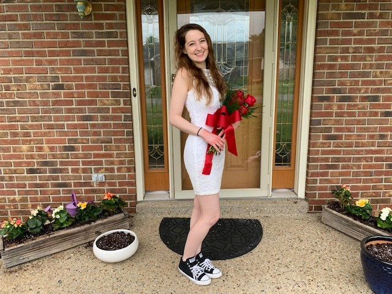

Personal Portfolio: Annelise Kezdy
About Me
I am currently a sophomore at Rose-Hulman Institute of Technology width a major in computer science. Our slogan may be "Fear the Engineer", but I believe attending this school has increased my skills in effective team communication and leadership. Professionally, I am interested in web development opportunities and potentially programming related to robotics. I enjoy working both alone and with teams and can stay organized and efficient in both environments.
Outside of school and professional opportunities, I enjoy getting out and being an active member of my school community, doing things with my friends, reading (currenty the Witcher series), video games, and comic books! I have two very active kittens back at home and my favorite thing to get out and do is go to the movies. I would love to hear from you! Contact me at my email address below.
At a glance
- Graduated from Sacred Heart Academy in 2016 with a 4.0 GPA.
- Currently a sophomore CS major at Rose-Hulman Institute of Technology with a 3.75 GPA.
- Looking for opportunities in web development and/or robotics programming.
- Currently a member of WOLFPAC (Women Of Like Fields Passionate About Computing) at Rose-Hulman.
- Member of the astronomy club at Rose-Hulman.
Click for a random famous saying!